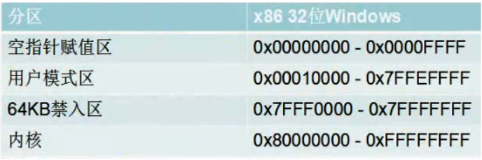
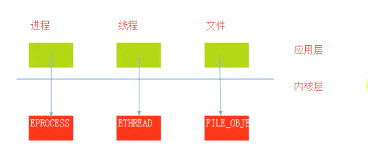
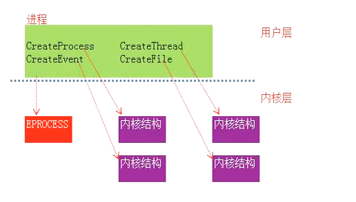
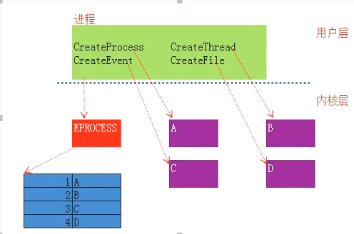
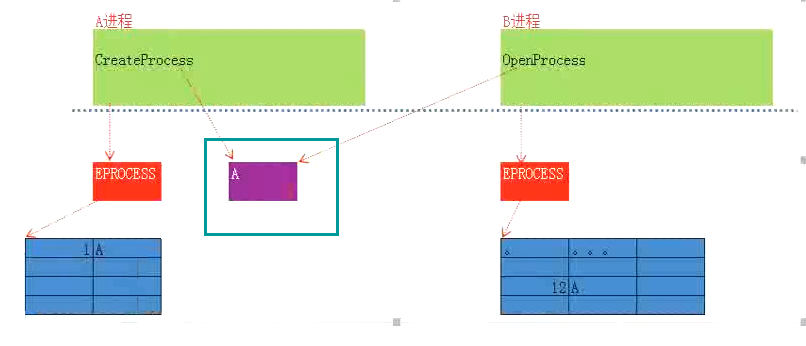
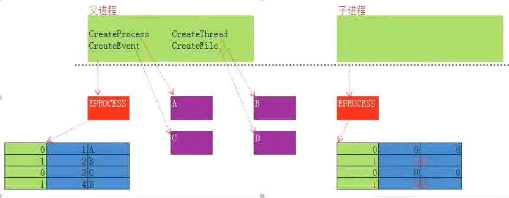
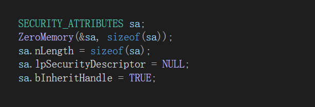
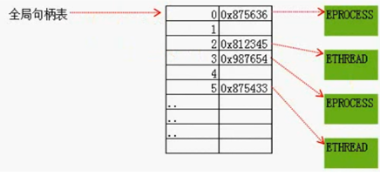
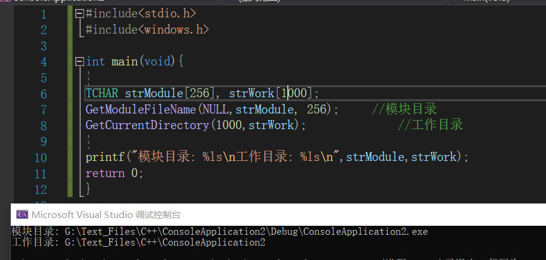

# 进程
# 进程是什么
进程提供程序所需的资源，如：数据、代码等等。
# 进程内存空间的地址划分

# 进程的创建
- 任何进程都是别的进程创建的: CreateProcess ()
- 进程的创建过程
- 映射 EXE 文件
- 创建内核对象 EPROCESS
- 映射系统 DLL (ntdll.dIl)
- 创建线程内核对象 ETHREAD
- 系统启动线程
- 映射 DLL (ntll.Ldrlnitialize Thunk)
- 线程开始执行
在这个进程的创建过程中是可以动手脚的。
# 创建进程
进程的创建：
# CreateProcess 函数
BOOL CreateProcess( | |
LPCTSTR lpApplicationName, // 应用程序名称 | |
LPTSTR lpCommandLine, // 命令行字符串 | |
LPSECURITY_ATTRIBUTES lpProcessAttributes, // 进程的安全属性 | |
LPSECURITY_ATTRIBUTES lpThreadAttributes, // 线程的安全属性 | |
BOOL bInheritHandles, // 是否继承父进程的属性 | |
DWORD dwCreationFlags, // 创建标志 | |
LPVOID lpEnvironment, // 指向新的环境块的指针 | |
LPCTSTR lpCurrentDirectory, // 指向当前目录名的指针 | |
LPSTARTUPINFO lpStartupInfo, // 传递给新进程的信息 | |
LPPROCESS_INFORMATION lpProcessInformation // 新进程返回的信息 | |
); | |
// 在 processthreadsapi.h 中为 | |
WINBASEAPI | |
BOOL | |
WINAPI | |
CreateProcessA( | |
_In_opt_ LPCSTR lpApplicationName, | |
_Inout_opt_ LPSTR lpCommandLine, | |
_In_opt_ LPSECURITY_ATTRIBUTES lpProcessAttributes, | |
_In_opt_ LPSECURITY_ATTRIBUTES lpThreadAttributes, | |
_In_ BOOL bInheritHandles, | |
_In_ DWORD dwCreationFlags, | |
_In_opt_ LPVOID lpEnvironment, | |
_In_opt_ LPCSTR lpCurrentDirectory, | |
_In_ LPSTARTUPINFOA lpStartupInfo, | |
_Out_ LPPROCESS_INFORMATION lpProcessInformation | |
); | |
WINBASEAPI | |
BOOL | |
WINAPI | |
CreateProcessW( | |
_In_opt_ LPCWSTR lpApplicationName, | |
_Inout_opt_ LPWSTR lpCommandLine, | |
_In_opt_ LPSECURITY_ATTRIBUTES lpProcessAttributes, | |
_In_opt_ LPSECURITY_ATTRIBUTES lpThreadAttributes, | |
_In_ BOOL bInheritHandles, | |
_In_ DWORD dwCreationFlags, | |
_In_opt_ LPVOID lpEnvironment, | |
_In_opt_ LPCWSTR lpCurrentDirectory, | |
_In_ LPSTARTUPINFOW lpStartupInfo, | |
_Out_ LPPROCESS_INFORMATION lpProcessInformation | |
); |
CreateProcess 函数详细参见百科 https://baike.baidu.com/item/CreateProcess/11050419
# STARTUPINFO 结构体
LPSTARTUPINFO 是一个结构体指针，指向 STARTUPINFO ， STARTUPINFO 结构体如下：
typedef struct _STARTUPINFOW { | |
DWORD cb; // 指定该结构大小 | |
LPWSTR lpReserved; // 保留，置为 NULL | |
LPWSTR lpDesktop; // 指定一个字符串，包括该进程的桌面或窗口位置名 | |
LPWSTR lpTitle; // 指定控制台进程创建的新控制台窗口标题 | |
DWORD dwX; // 指定新窗口左上角的 x 和 y 偏移量（以像素为单位） | |
DWORD dwY; //…… | |
DWORD dwXSize; // 指定新窗口的宽度和高度 | |
DWORD dwYSize; //…… | |
DWORD dwXCountChars; // 指定新窗口的屏幕缓存区的宽度和高度 | |
DWORD dwYCountChars; //…… | |
DWORD dwFillAttribute; // 指定新窗口的初始化文字和背景颜色 | |
DWORD dwFlags; // 创建窗口标志 | |
WORD wShowWindow; // 新窗口的显示状态 | |
WORD cbReserved2; // 保留，必须置为 0 | |
LPBYTE lpReserved2; // 保留，必须置为 NULL | |
HANDLE hStdInput; // 指定一个句柄，该句柄用作进程的标准输入句柄 | |
HANDLE hStdOutput; // 指定一个句柄，该句柄用作进程的标准输出句柄 | |
HANDLE hStdError; // 指定一个句柄，该句柄用作进程的标准错误句柄 | |
} STARTUPINFOW, * LPSTARTUPINFOW; | |
typedef struct _STARTUPINFOA { | |
DWORD cb; | |
LPSTR lpReserved; | |
LPSTR lpDesktop; | |
LPSTR lpTitle; | |
DWORD dwX; | |
DWORD dwY; | |
DWORD dwXSize; | |
DWORD dwYSize; | |
DWORD dwXCountChars; | |
DWORD dwYCountChars; | |
DWORD dwFillAttribute; | |
DWORD dwFlags; | |
WORD wShowWindow; | |
WORD cbReserved2; | |
LPBYTE lpReserved2; | |
HANDLE hStdInput; | |
HANDLE hStdOutput; | |
HANDLE hStdError; | |
} STARTUPINFOA, * LPSTARTUPINFOA; |
# PROCESS_INFORMATION 结构体
LPPROCESS_INFORMATION 也是一个结构体指针，指向 PROCESS_INFORMATION , PROCESS_INFORMATION 结构体如下：
typedef struct _PROCESS_INFORMATION { | |
HANDLE hProcess; // 进程句柄 | |
HANDLE hThread; // 线程句柄 | |
DWORD dwProcessId; // 进程 ID | |
DWORD dwThreadId; // 线程 ID | |
} PROCESS_INFORMATION, * PPROCESS_INFORMATION, * LPPROCESS_INFORMATION; |
打开 Chrome 浏览器，并打开指定网页
#include<iostream> | |
#include<Windows.h> | |
//*********************************// | |
// 父进程填充的信息 | |
//***************** 可以用在调试与反调试对抗 ************* | |
// 返回值：void | |
//*********************************// | |
void AntiDebug(LPSTARTUPINFO si) { | |
//STARTUPINFO si; | |
//GetStartupInfo(&si); | |
printf("结构大小：%#X\n", si->cb); | |
printf("%#X\n", si->dwFlags); | |
printf("%#X\n", si->lpDesktop); | |
printf("%#X\n", si->lpReserved); | |
printf("%#X\n", si->cbReserved2); | |
printf("%#X\n", si->dwFillAttribute); | |
printf("%#X\n", si->dwX); | |
printf("%#X\n", si->dwY); | |
printf("%#X\n", si->wShowWindow); | |
printf("新控制台窗口标题：%p\n", si->lpTitle); | |
} | |
//*********************************// | |
// 子进程返回的信息 | |
// 返回值：void | |
//*********************************// | |
void ReturnInfo(PPROCESS_INFORMATION pi) { | |
printf("进程句柄：%p\n", pi->hProcess); | |
printf("线程句柄：%p\n", pi->hThread); | |
printf("进程ID：%#X\n", pi->dwProcessId); | |
printf("线程ID：%#X\n", pi->dwThreadId); | |
} | |
//*********************************// | |
// 创建子进程 | |
// 返回值：BOOL 成功与失败 | |
//*********************************// | |
BOOL CreateChildProcess(PTCHAR szChildProcessName, PTCHAR szCommandLine) { | |
STARTUPINFO si; | |
PROCESS_INFORMATION pi; | |
ZeroMemory(&si, sizeof(si)); | |
ZeroMemory(&pi, sizeof(pi)); | |
si.cb = sizeof(si); | |
if (!CreateProcess( | |
szChildProcessName, // 对象名称（全路径名） | |
szCommandLine, // 命令行 | |
NULL, // 不继承进程句柄 | |
NULL, // 不继承线程句柄 | |
FALSE, // 不继承句柄 | |
0, // 没有创建标志 | |
NULL, // 使用父进程环境变量 | |
NULL, // 使用父进程目录作为当前目录，可以自己设置目录 | |
&si, //STARTUPINFO 结构体详细信息 | |
&pi) //PROCESS_INFORMATION 结构体详细信息 | |
) | |
{ // 返回最近的错误代码值 | |
printf("CreateChildProcess Error:%d \n", GetLastError()); | |
return FALSE; | |
} | |
// 查看父进程填充的信息 | |
AntiDebug(&si); | |
// 查看子进程返回的信息 | |
ReturnInfo(&pi); | |
// 释放句柄 | |
CloseHandle(pi.hProcess); | |
CloseHandle(pi.hThread); | |
return TRUE; | |
} | |
int main(int argc, char* argv[]) { | |
TCHAR szApplicationName[] = TEXT("C:\\Program Files (x86)\\Google\\Chrome\\Application\\chrome.exe"); | |
TCHAR szCmdline[] = TEXT("\\ http://www.baidu.com");// 打开百度 | |
CreateChildProcess(szApplicationName, szCmdline); | |
} |
学习 CreateProcess 里的 PPROCESS_INFORMATION 时里面有进程和线程句柄、ID，那这是什么呢？这就要学习句柄表了
# 句柄表
# 什么是内核对象
像进程、线程、文件、互斥体、事件等在内核都有一个对应的结构体，这些结构体由内核负责管理。我们管这样的对象叫做内核对象。

# 如何管理内核对象

不能和常规的结构体一样，把内核结构体的地址传给用户层使其操作。这样就会出现问题，若是用户把访问地址更改了，就会找不到内核结构体了，出现内存地址访问错误，一般内存地址访问错误会出现 0x0000 的报错，但内核地址访问错误就直接蓝屏了。
# 每一个进程都有一个句柄表
不是每个内核对象都有表。

映射关系，不让用户直接访问。
创建一个对象，想对它做任何事情必须通过句柄来实现。
句柄，句柄表概念
任意进程，只要每打开一个对象，就会获得一个句柄，这个句柄用来标志对某个对象的一次打开，通过句柄，可以直接找到对应的内核对象。句柄本身是进程的句柄表中的一个结构体，用来描述一次打开操作。句柄值则可以简单看做句柄表中的索引，并不影响理解。HANDLE 的值可以简单的看做一个整形索引值。
# 多进程共享一个内核对象

当调用 CloseHandle() 函数成功后，相关的内核对象的引用计数被减 1。它并没有真正的关闭内核对象，只是将计数减 1，也就是说，这个时候，如果这个内核对象的引用计数不为 0 的话，内核对象依然存在，如果你有办法找到他，那么你依然可以操作他。
以下两种情况，内核对象会被删除 -- 系统回收：
- 当内核对象的引用计数为 0 的时候
- 进程结束后
# 句柄是否可以被继承
图

内核对象都有一个 LPSECURITY_ATTRIBUTES 这种类型的参数：
typedef struct _SECURITY_ATTRIBUTES { | |
DWORD nLength; // 当前结构体的大小 | |
LPVOID lpSecurityDescriptor; // 指向一个对象的安全描述符 该安全描述符控制对象的共享 如果为ＮＵＬＬ 则该对象使用调用进程的默认安全描述符 | |
BOOL bInheritHandle; // 是否被继承 | |
} SECURITY_ATTRIBUTES, *PSECURITY_ATTRIBUTES, *LPSECURITY_ATTRIBUTES; |
若是不希望被继承，此参数填成 NULL 就行，若想让其继承则还需创建一个这样的结构体传递给此参数。

# 共享内核
学了上面内容我们就知道两种共享内核的解决方式了。
# 进程相关的
# ID 与句柄
每个进程有自己的句柄表，而操作系统也有自己的句柄表，里面至少包含了所有正在运行的进程和线程，和进程的句柄表没有太大的区别。
ID 也叫 PID，是全局变量中的值，所有进程都认识。
全局句柄表

# 以挂起的形式创建进程
如果以 CREATE_SUSPENDED 以挂起的方式创建进程，系统只会分配 4G 空间，而不会执行拉伸等后续操作，此时可以就可以对这个空间做一些你懂的事情。
那么其进程创建的过程为：
- 任何进程都是别的进程创建的: CreateProcess ()
- 进程的创建过程
- 映射 EXE 文件
- 创建内核对象 EPROCESS
- 映射系统 DLL (ntdll.dIl)
- 创建线程内核对象 ETHREAD
- 如果是挂起的方式创建的，恢复以后再继续执行。
- 系统启动线程
- 映射 DLL (ntll.Ldrlnitialize Thunk)
- 线程开始执行
代码
#include<iostream> | |
#include<Windows.h> | |
//*********************************// | |
// 子进程返回的信息 | |
// 返回值：void | |
//*********************************// | |
void ReturnInfo(PPROCESS_INFORMATION pi) { | |
printf("进程句柄：%p\n", pi->hProcess); | |
printf("线程句柄：%p\n", pi->hThread); | |
printf("进程ID：%#X\n", pi->dwProcessId); | |
printf("线程ID：%#X\n", pi->dwThreadId); | |
} | |
//*********************************// | |
// 创建子进程 | |
// 返回值：BOOL 成功与失败 | |
//*********************************// | |
BOOL CreateChildProcess(PTCHAR szChildProcessName, PTCHAR szCommandLine) { | |
STARTUPINFO si; | |
PROCESS_INFORMATION pi; | |
ZeroMemory(&si, sizeof(si)); | |
ZeroMemory(&pi, sizeof(pi)); | |
si.cb = sizeof(si); | |
SECURITY_ATTRIBUTES sa; | |
ZeroMemory(&sa, sizeof(sa)); | |
sa.nLength = sizeof(sa); | |
sa.lpSecurityDescriptor = NULL; | |
sa.bInheritHandle = TRUE; | |
if (!CreateProcess( | |
szChildProcessName, // 对象名称（全路径名） | |
szCommandLine, // 命令行 | |
NULL, // 不继承进程句柄 | |
NULL, // 不继承线程句柄 | |
FALSE, // 不继承句柄 | |
CREATE_SUSPENDED, // 以挂起的形式创建进程 | |
NULL, // 使用父进程环境变量 | |
NULL, // 使用父进程目录作为当前目录，可以自己设置目录 | |
&si, //STARTUPINFO 结构体详细信息 | |
&pi) //PROCESS_INFORMATION 结构体详细信息 | |
) | |
{ // 返回最近的错误代码值 | |
printf("CreateChildProcess Error:%d \n", GetLastError()); | |
return FALSE; | |
} | |
// 查看子进程返回的信息 | |
ReturnInfo(&pi); | |
// 进程挂起后，恢复前做的事情 | |
for (int i = 0; i < 10; i++) | |
{ | |
Sleep(1000); | |
printf("------------------\n"); | |
} | |
// 线程恢复函数 | |
ResumeThread(pi.hThread); | |
// 释放句柄 | |
CloseHandle(pi.hProcess); | |
CloseHandle(pi.hThread); | |
return TRUE; | |
} | |
int main(int argc, char* argv[]) { | |
TCHAR szApplicationName[] = TEXT("C:\\WINDOWS\\system32\\notepad.exe"); | |
CreateChildProcess(szApplicationName, NULL); | |
} |
# 模块目录和工作目录

# CreeateProcess 函数的其他参数
https://baike.baidu.com/item/CreateProcess/11050419 百度百科非常详细了
# 进程终止
终止进程的三种方式：
1、VOID ExitProcess(UINT fuExitCode) // 进程自己调用 | |
2、BOOL TerminateProcess(HANDLE hProcess, UINT fuExitCode); // 终止其他进程 | |
3、ExitThread // 终止进程中的所有线程，进程也会终止 |
获取进程的退出码：
BOOL GetExitCodeProcess(HANDLE hProcess,PDWORD pdwExitCode);
进程终止时相关操作：
1、进程中剩余的所有线程全部终止运行
2、进程指定的所有用户对象均被释放，所有内核对象均被关闭
3、进程内核对象的状态变成收到通知的状态
4、进程内核对象的使用计数递减 1